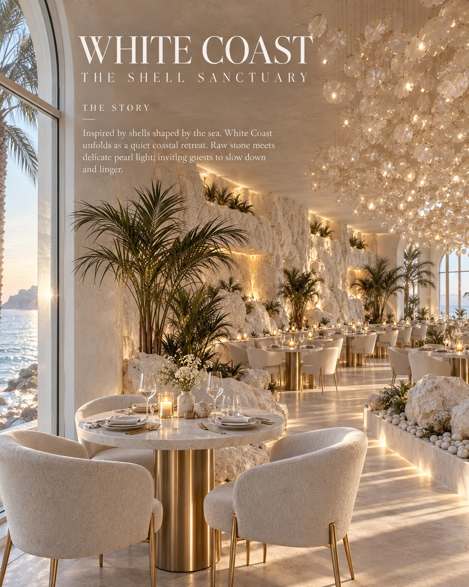
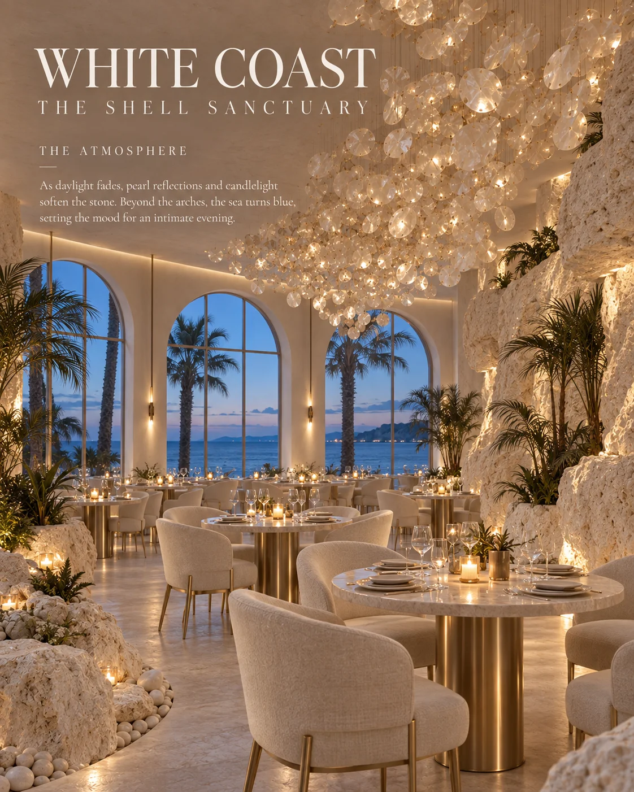
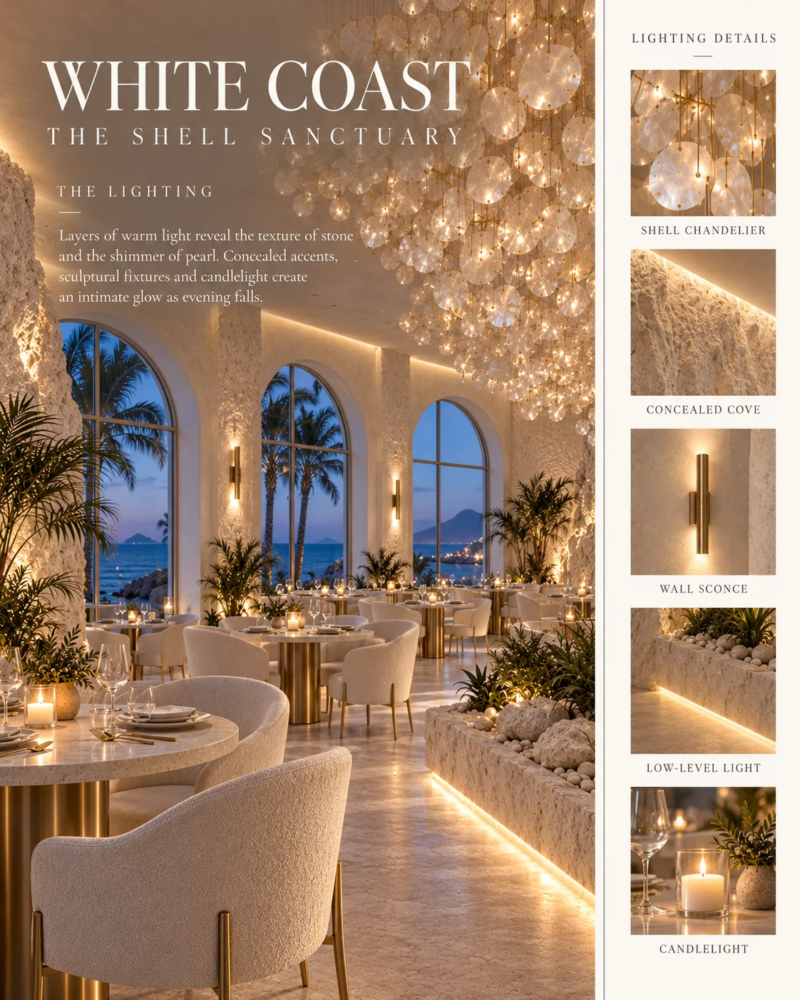
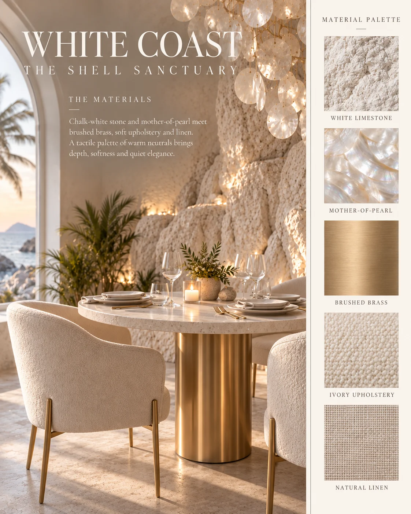
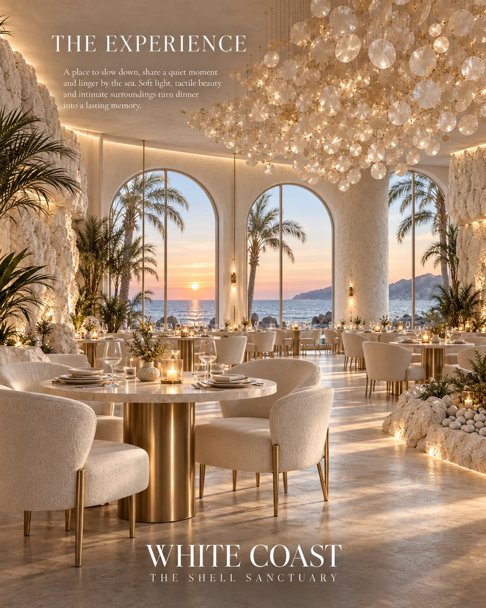
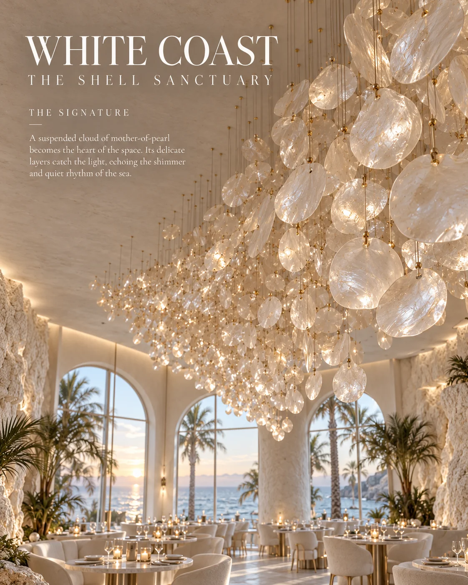
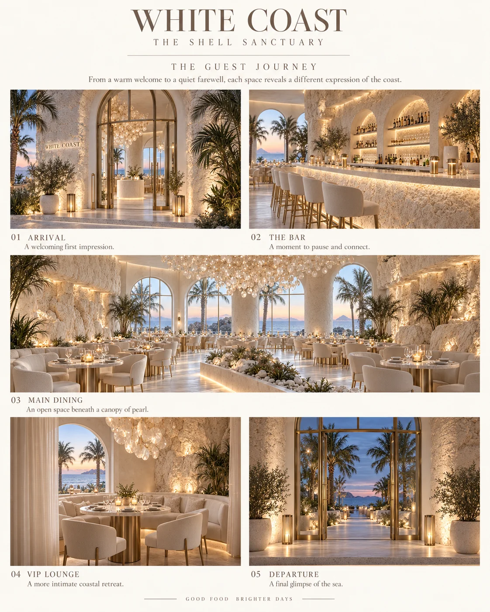

Coastal restaurant concept
WHITE COAST
A shell sanctuary above the water — white stone, pearl light and the sound of the sea.

WHITE COAST is a coastal restaurant concept shaped like a shell sanctuary. Sculpted white stone, mother-of-pearl chandeliers and soft arched openings create a bright, protective interior that stays open toward the sea. The room is designed to feel held — calm, luminous and quietly luxurious. The concept studies the shell as both form and feeling: a smooth interior inside a rougher world. Light moves across curved plaster the way it moves inside a shell, and the sea is never out of sight, so the boundary between sanctuary and horizon stays deliberately thin.
Material direction
White sculpted plaster and stone; mother-of-pearl and capiz shell; pale travertine; bleached timber; sheer linen; frosted and rippled glass. These are concept-stage material directions, with final products and detailing to be developed separately.
My role
Concept, atmosphere, lighting, materials and guest journey — Maria Andriiuk.
Concept & story
The shell is the whole story: protection without closing off, beauty without decoration. Each space — entry, dining hall and the signature chandelier room — is a chamber of the same shell, turning guests slowly toward the water. The palette stays white-on-white so the sea provides all the colour.
Emotion & atmosphere
The intended mood is serene, luminous and gentle. Curved surfaces soften sound, sheer fabrics filter the coastal light, and by evening the pearl chandeliers take over with a warm, low glow. The atmosphere is designed as an exhale — a place where the pace drops on arrival.
Light & material direction
Daylight is the main material, bounced off white plaster and filtered through sheers; at night, mother-of-pearl fixtures glow like the inside of a shell. Pale stone and rippled glass keep every reflection soft. Technical lighting and final specifications would be resolved during further design development.
Guest journey
01 / Arrival — A sculpted white threshold with the first glimpse of blue. 02 / Unfolding — Arched openings reveal the dining hall chamber by chamber. 03 / The signature — Seating beneath the mother-of-pearl chandelier. 04 / The table — Dinner facing the horizon as the light changes. 05 / Evening — The room turns warm and pearlescent as the sea goes dark.
Project scope
This self-initiated, unbuilt concept is presented through eight boards covering the idea, story, atmosphere, light and materials, guest journey and final composition. Concept imagery communicates the creative direction. Measured planning, construction documentation, engineering and site delivery are outside this concept study.

The story — Chamber by chamber, arched openings turn guests toward the water.Open full size ↗
The atmosphere — Evening inside the shell: pearl light against a darkening sea.Open full size ↗
The lighting — Daylight bounced off plaster; pearl fixtures after dusk.Open full size ↗
The materials — White stone, mother-of-pearl, pale travertine and sheer linen.Open full size ↗
The experience — A luminous dining hall held between sanctuary and horizon.Open full size ↗
The signature — The mother-of-pearl chandelier, the heart of the room.Open full size ↗
The guest journey — Five moments from the first glimpse of blue to a pearlescent evening.Open full size ↗